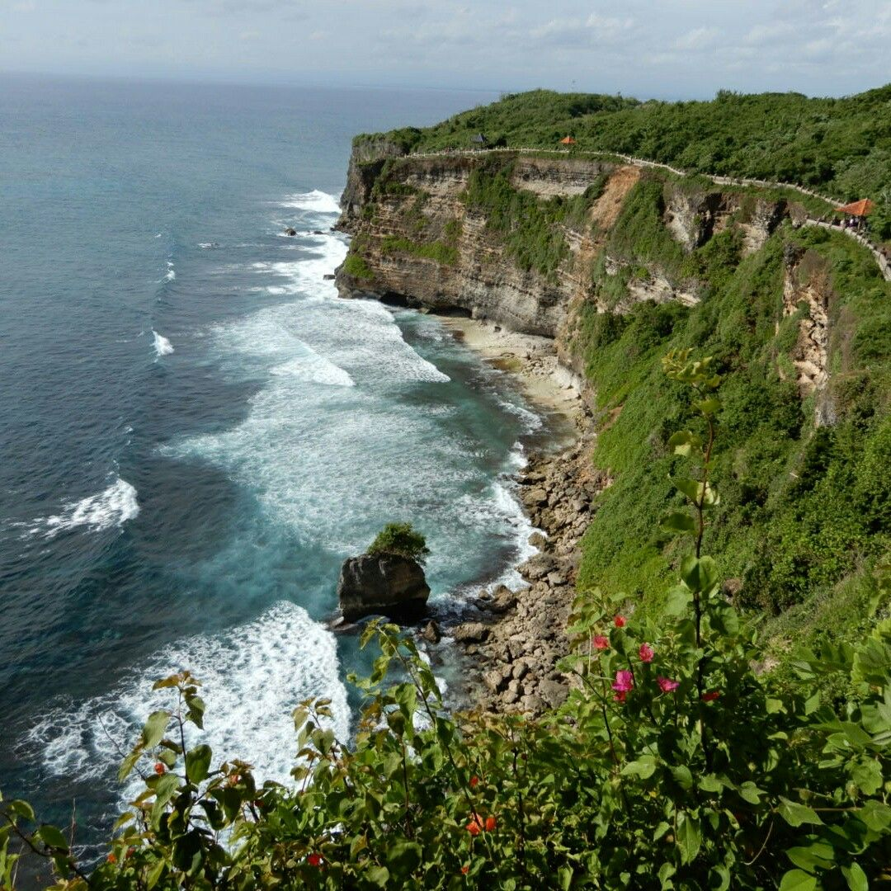
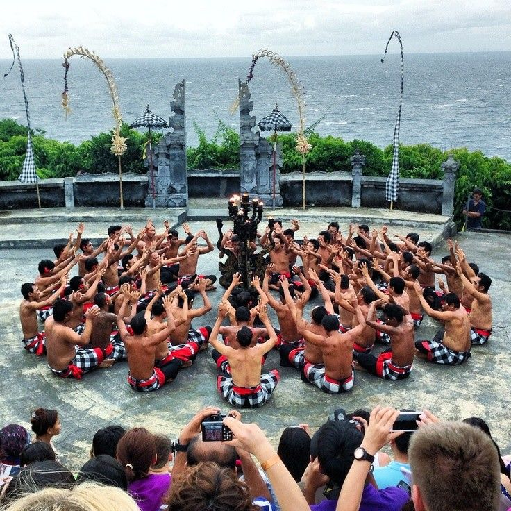
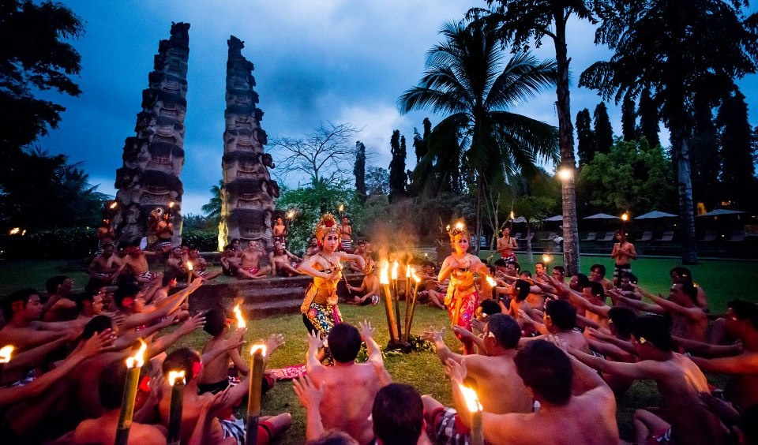

1.Pura luhur Uluwatu
Pura Luhur Uluwatu adalah salah satu pura paling penting di Bali. Pura ini dibangun di atas tebing setinggi sekitar 70 meter di atas Samudra Hindia. Selain keindahannya, pura ini juga terkenal dengan pertunjukan Tari Kecak yang diadakan saat matahari terbenam.
 Uluwatu Bali2.Pantai Pantai Indah di Uluwatu Bali
Uluwatu memiliki banyak pantai tersembunyi dengan pasir putih dan ombak besar, sangat cocok untuk berselancar atau sekadar bersantai. 🌊 Pantai-pantai terkenal di Uluwatu: Padang Padang Beach
–Pantai kecil dengan air jernih, terkenal sejak muncul di film Eat, Pray, Love. Suluban Beach – Dikenal sebagai Blue Point Beach, surga bagi peselancar. Bingin Beach – Pantai eksotis dengan suasana lebih sepi dan romantis. Nyang Nyang Beach – Pantai tersembunyi dengan pasir putih yang masih alami.
3.Spot Kuliner dan Beach Club
Di Uluwatu, banyak tempat makan dan beach club dengan pemandangan laut yang menakjubkan. Beberapa rekomendasi:
🍹 Tempat hits di Uluwatu: Single Fin – Tempat nongkrong dengan view sunset terbaik. El Kabron – Restoran ala Spanyol di tebing dengan infinity pool. Sundays Beach Club – Beach club mewah dengan akses ke pantai pribadi.
4.Aktivitas Seru di uluwatu
Selain menikmati pantai dan pura, ada banyak aktivitas yang bisa dilakukan di Uluwatu:
✅ Berselancar – Ombaknya cocok untuk peselancar pro. ✅ Paragliding – Menikmati pemandangan Uluwatu dari udara. ✅ Spa & Yoga – Banyak tempat spa dan yoga dengan view laut yang menenangkan.
5.Penginapan di Uluwatu
Di Uluwatu, tersedia berbagai pilihan akomodasi, mulai dari vila mewah hingga hotel budget-friendly.
🏡 Rekomendasi tempat menginap:
Alila Villas Uluwatu – Vila mewah dengan infinity pool dan arsitektur modern. The Edge Bali – Resort eksklusif di tebing dengan pemandangan luar biasa. PinkCoco Bali – Hotel unik dengan desain bohemian dekat pantai.
